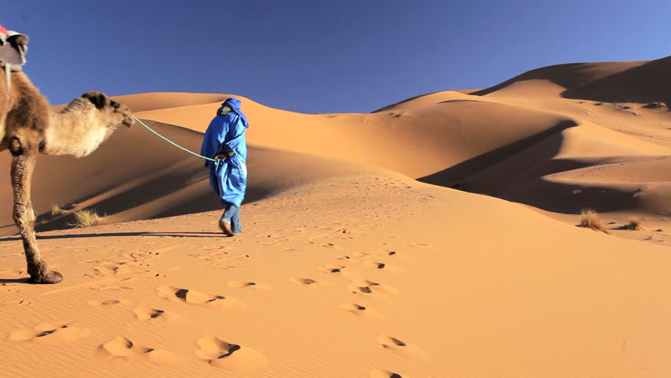

MARRUECOS
Resumen
Marruecos (en árabe: المغرب al-Maġrib, ‘el país del occidente’;'La tierra de Dios') —oficialmente denominado
Reino de Marruecos o Reino Alauita de Marruecos— es un país soberano situado en el Magreb, al norte de África,
con costas en el océano Atlántico y el mar Mediterráneo. A sólo unas millas marinas de la península Ibérica se
encuentra Marruecos. Marruecos ha sido cuna de innumerables culturas que lo han convertido en un
impresionante crisol en el que se mezclan las más coloristas expresiones artísticas
con la más férrea tradición religiosa.
Rodeada por Argelia y Mauritania, Marruecos es uno de los pocos lugares del mundo
donde podemos pasar de cumbres nevadas a arenas de desierto.
Su proximidad con Europa, hace que Marruecos sea el lugar ideal para acercarse,
conocer la cultura islámica y donde sentiremos la gentileza, gratitud y hospitalidad de sus
gentes.
Antecedentes
| Capital: |
Rabat |
| Cantidad de Habitantes: |
35 330 305 hab |
| Superficie (Km2): |
446 550 4 km² |
| Idiomas Oficiales: |
Árabe y lenguas bereberes |
| Moneda: |
Dirham marroquí (درهم, MAD) |
| Huso Horario: |
UTC+1 |
| Fecha de Independencia: |
2 de marzo de 1956 |
Ciudades
- Casablanca, la ciudad más poblada con 3.300.000 habitantes.
- Rabat, capital del país con 1.800.000 habitantes.
- Fez, considerada la capital cultural y espiritual de Marruecos con 1.000.000 habitantes
- Marrakech, importante centro turístico con 900.000 habitantes).
- Tánger con 800.000 habitantes.
Atractivos Turísticos
- Chefchaouen: Este es uno de los lugares más acojedores de Marruecos. Las casas y paredes azules dentro de la
Medina son un espectáculo. Chefchaoen es una gran destino para visitar por un par de días. Te recomiendo
tomarte su tiempo explorando la Medina y disfrutar de un buen té de Marruecos en la plaza principal mientras
ves como los locales interactúan entre ellos.
- Fez El Balí: El ambiente en Fez es auténtico y especial. Al caminar por la Medina más grande de Marruecos,
te das cuenta que este no es un lugar para turistas. Es muy fácil perderse por las estrechas calles de Fez,
así que prepárate para una buena aventura. La Medina es un caos en donde encuentras aglomeradas a cientos de
personas, a mulas transportando diferentes objetos y miles de tiendas vendiendo todo tipo de cosas. Fez es
un desorden que vale la pena visitar.
- Marrakech: Es uno de los destinos turísticos más populares de Marruecos. La Ciudad Roja es sin duda un buen
lugar para los turistas que quieren conocer Marruecos y luego pasar al Desierto. La Medina es hermosa y no
es tan caótica como la de Fez. Hay varias tiendas con lámparas, alfombras, ropa y joyas que pueden
mantenerte entretenido por un buen rato mientras exploras.
- Merzouga (el Desierto): Este lugar debe estar incluído en tu itinerario. Merzouga es un pequeño pueblo
ubicado en el Desierto del Sahara lejos de la urbanización en Marruecos. Este es el lugar perfecto para
montar a camello y disfrutar de una noche bajo las estrellas rodeado de dunas de arena.
- Rabat, capital de Marruecos y ciudad Imperial: Esta ciudad es una curiosa mezcla de la tradición histórica
del pasado y la modernidad establecida en el presente. Fue fundada por Abd al-Mumin en el siglo XII, y
utilizó la kasbah (“fortaleza”) como base para luchar contra los españoles. Fue durante este período cuando
se construyeron sus edificios más emblemáticos, como pueden ser la torre Hassan y la Kasbah des Oudaias.
Esta ciudad se convirtió en el bastión para los musulmanes expulsados de España a principios del siglo XVII.
Imágenes
|  |
 |